Trang chủ / Chuyên đề 7: Hồ Sơ Các Chủng Tộc / Kỳ 61
Chuyên đề 7 · Kỳ 61 / 90
CHÒM SAO THIÊN CẦM (LYRA / HỆ MAN K62) & SAO CHỨC NỮ (VEGA)

Kỳ này trình bày hồ sơ sinh học của 12 chủng tộc thuộc khu vực Chòm Sao Thiên Cầm (Lyra / Hệ Man K62) & Sao Chức Nữ (Vega). Mỗi hồ sơ gồm hình dáng, chiều cao, đặc điểm sinh học – giác quan, và vai trò trong bức tranh thiên hà.
Ahel (Hành tinh Maya — Hệ Man / Kepler-62)
- Hình dáng & Chiều cao: Cao 1,8m – 2,2m; thân hình thon dài, thể thao, di chuyển thanh thoát. Làn da trắng phát sáng nhợt; tóc màu vàng óng đến bạch kim; đôi mắt to màu xanh dương coban hoặc xanh ngọc.
- Đặc điểm Sinh học & Giác quan: DNA 12 chuỗi, khối não thống nhất không phân thùy. Làn da sở hữu mật độ thụ thể thần kinh siêu nhạy cảm. Ăn thuần thực vật khoáng chất. Tuổi thọ 500 – 900 năm.
- Đặc tính & Vai trò Thiên hà: Hòa bình; thành viên nòng cốt Liên Đoàn Thế Giới Thiên Hà (GFW). Tổ tiên gieo mầm người Pleiades (Erra) và đóng góp di truyền lớn cho con người Trái Đất.
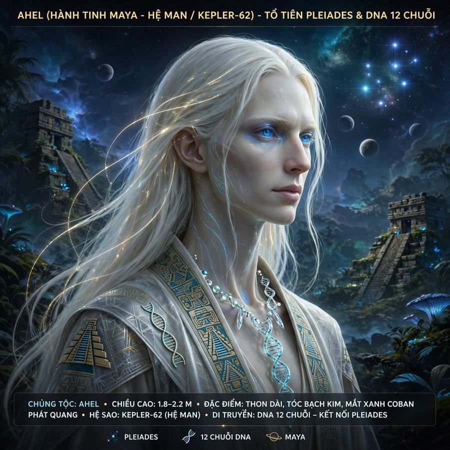
Noor (Hành tinh Tar — Hệ Man / Kepler-62)
- Hình dáng & Chiều cao: Khổng lồ cao 2,4m – 2,7m; khung xương to lớn, cơ bắp cuồn cuộn. Da trắng sứ rất nhạy cảm với bức xạ sao lùn Mana; tóc vàng đến đỏ rực; mắt xanh lam, xanh lá hoặc xám.
- Đặc điểm Sinh học & Giác quan: Hệ tuần hoàn và trái tim cực mạnh. Hấp thụ năng lượng tần số âm thanh tinh thể. Tuổi thọ 500 – 2.000 năm.
- Đặc tính & Vai trò Thiên hà: Hòa bình; thành viên GFW. Tổ tiên người khổng lồ tóc đỏ trong truyền thuyết cổ đại.
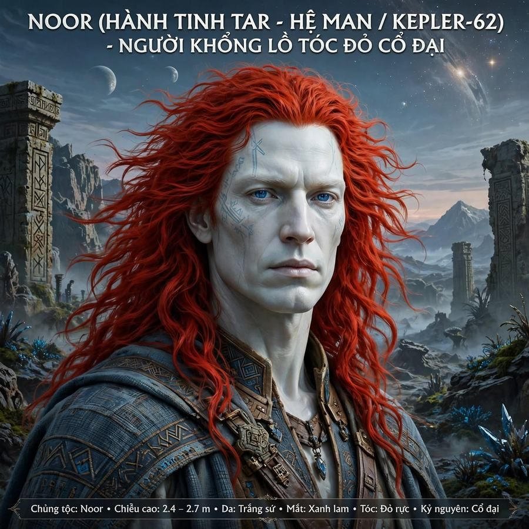
Taal (Hành tinh Oman Khera — Hệ Man / Kepler-62)
- Hình dáng & Chiều cao: Cao 1,7m – 2,0m; cấu trúc xương mặt góc cạnh, gò má cao. Đa dạng màu da (trắng, nâu, đồng); tóc đen, nâu, đỏ; mắt nâu hoặc xám pha lê.
- Đặc điểm Sinh học & Giác quan: Ăn đa dạng (omnivore), hệ tiêu hóa dẻo dai. Hệ thần kinh tập trung vào tính khắc kỷ và khả năng chịu đựng cao. Tuổi thọ 500 – 700 năm.
- Đặc tính & Vai trò Thiên hà: Hòa bình; sáng tạo Cổ ngữ Taami thiên hà. Định cư tại Pleiades (T-Mar), Tau Ceti và Sirius.
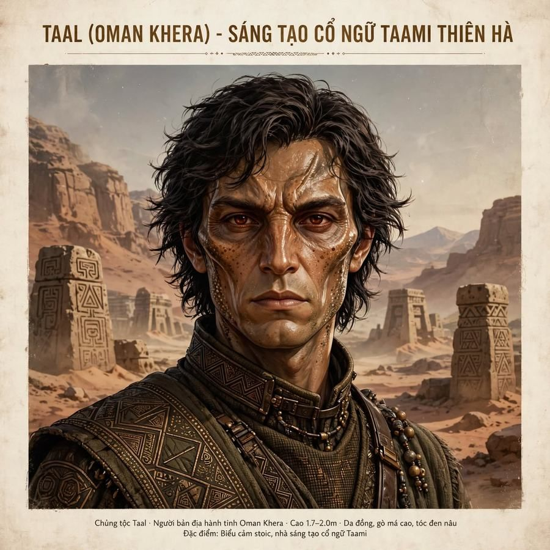
Laan (Hành tinh Egoria — Hệ Man / Kepler-62)
- Hình dáng & Chiều cao: Miêu tộc hình người (Feline-Humanoid) cao 2,1m – 2,5m; dẻo dai, có đuôi dẻo. Da màu vàng đồng bao phủ lớp lông tơ mịn; tóc đỏ hoặc cam rực; mũi phẳng, mắt to hổ phách hình quả hạnh; tai nhỏ tròn.
- Đặc điểm Sinh học & Giác quan: Thị giác ban đêm và thính giác siêu tinh nhạy, phản xạ gấp nhiều lần hình người. Tuổi thọ 700 – 1.000 năm.
- Đặc tính & Vai trò Thiên hà: Hòa bình; bậc thầy kiến trúc tinh thể và thơ ca. Đóng góp mã gen miêu tộc cho con người Trái Đất.
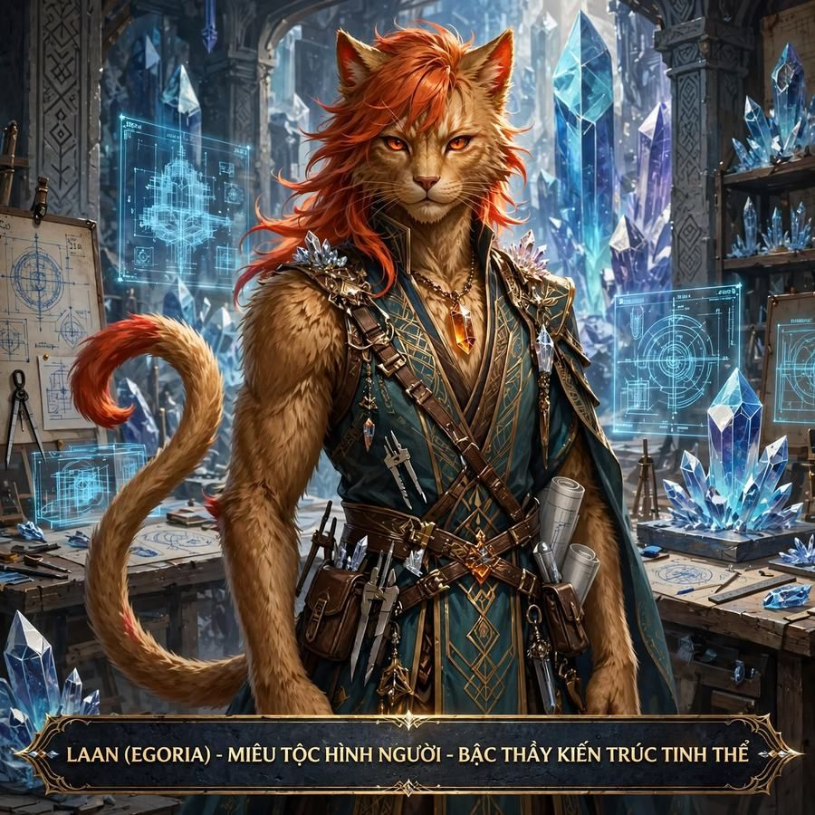
Ladrakh (Hành tinh G'mun — Hệ Man / Kepler-62)
- Hình dáng & Chiều cao: Bò sát hình người (Reptiloid) cao 1,8m – 2,0m; da vảy màu xám nâu nhẵn, không có lông, thân hình mảnh khảnh.
- Đặc điểm Sinh học & Giác quan: Máu lạnh, hệ thần kinh thích nghi dĩ thái. Chế độ ăn thuần ăn chay. Tuổi thọ 400 – 600 năm.
- Đặc tính & Vai trò Thiên hà: Hòa bình (chủ hòa); thuộc địa tại Sirius B và Vega; không liên minh với Đế chế Draco.
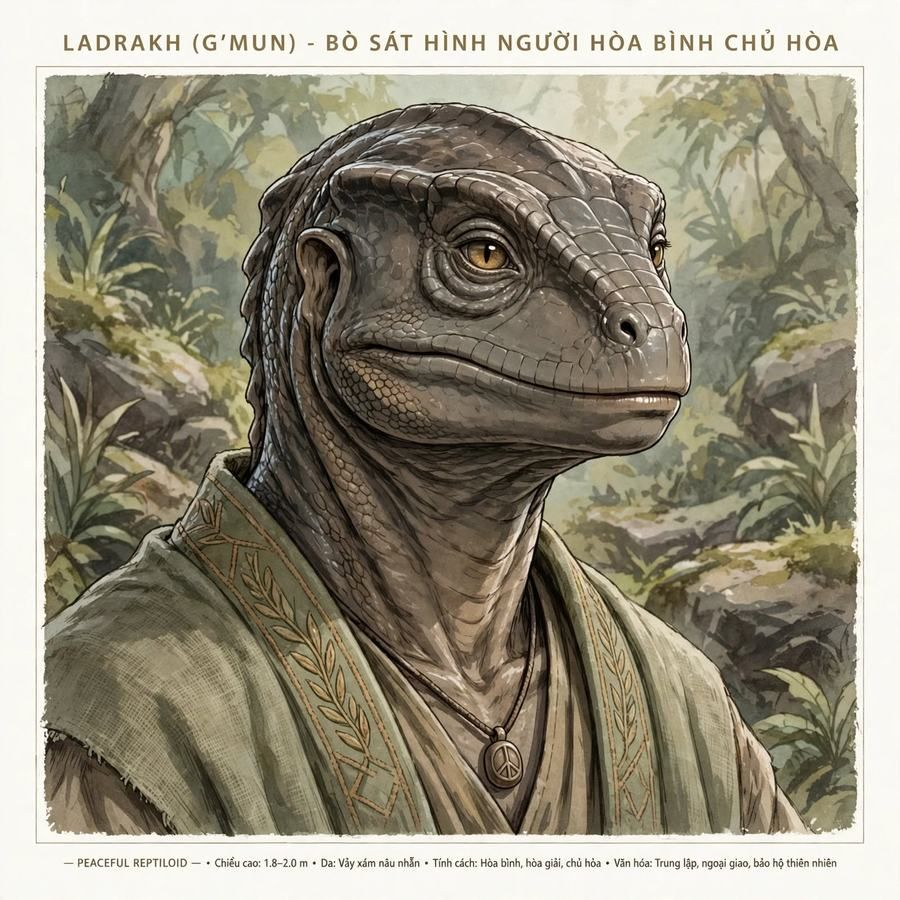
Eekaluun / Kaa (Hệ sao K8 — Lyra)
- Hình dáng & Chiều cao: Bò sát hình người cao 1,7m – 1,9m; da vảy màu xám mờ.
- Đặc điểm Sinh học & Giác quan: Hệ hô hấp đặc dệt bộ lọc chịu axit. Sinh sống trong bầu khí quyển axit đậm đặc.
- Đặc tính & Vai trò Thiên hà: Hòa bình; thành viên GFW, chuyên tư vấn ngoại giao và an toàn bầu khí quyển.
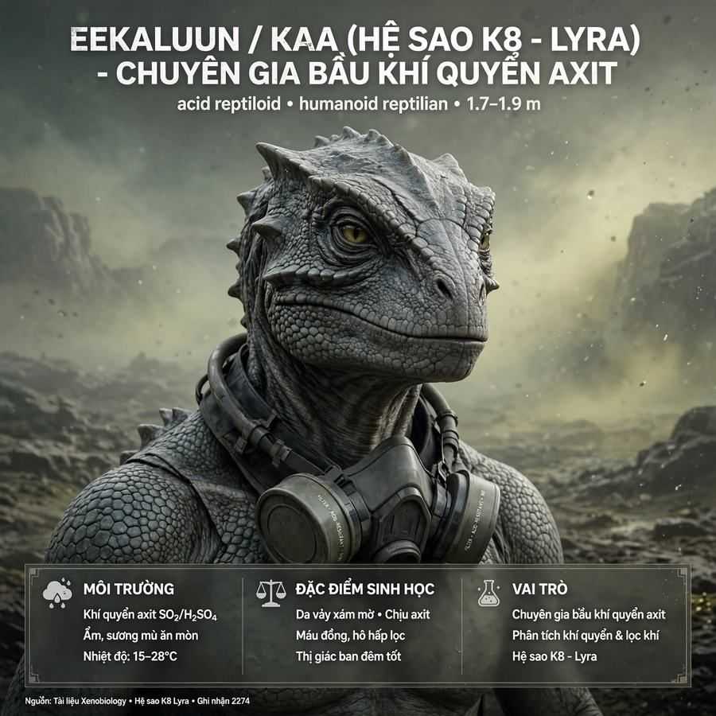
Hargalii Ayal (Hệ sao Kepler-37)
- Hình dáng & Chiều cao: Cao 1,8m – 2,1m; dòng lai giữa người Taal và người Laan. Mũi và mắt miêu tộc nhưng khuôn mặt mềm mại giống người.
- Đặc điểm Sinh học & Giác quan: Lớp lông tơ dày nhiều màu; phản xạ nhanh nhạy. Tuổi thọ khoảng 800 năm.
- Đặc tính & Vai trò Thiên hà: Hòa bình; thành viên GFW; từng lập thuộc địa tại Bắc Phi thời cổ đại.
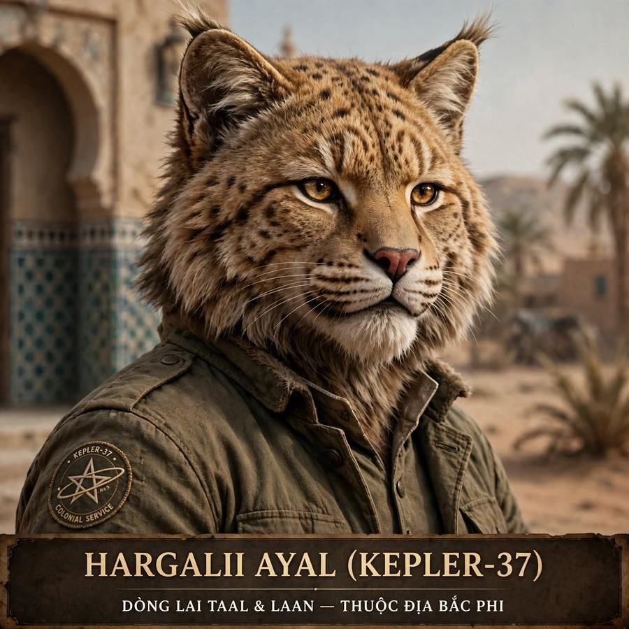
Orman (Hành tinh Daran 3 — Lyra)
- Hình dáng & Chiều cao: Cao 1,7m – 1,9m; lai giữa Miêu tộc (Feline) và Bò sát (Reptoid).
- Đặc điểm Sinh học & Giác quan: Da vảy mịn xanh đồng kết hợp lông tơ; mắt vàng có con ngươi khe dọc.
- Đặc tính & Vai trò Thiên hà: Trung lập; tập trung phát triển hệ sinh thái nội tại.
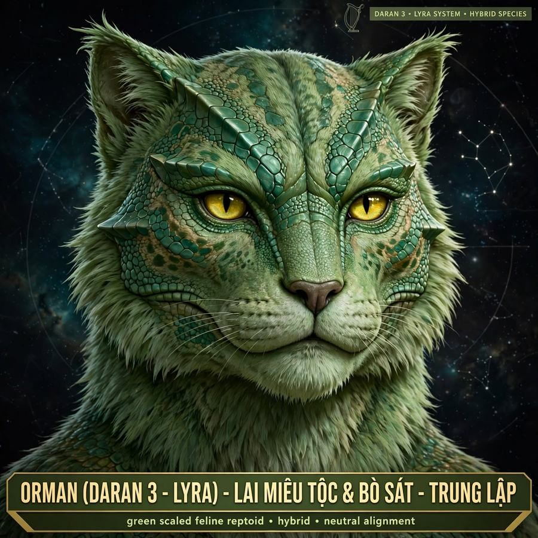
Nhorr (Hệ sao Daran — Lyra)
- Hình dáng & Chiều cao: Bò sát dạng người dũng mãnh cao 2,0m – 2,3m; da vảy hoa văn nhiều màu sắc.
- Đặc điểm Sinh học & Giác quan: Mắt vàng to khổng lồ; có 4 giới tính sinh học. Sử dụng tần số nhạc cụ tinh thể.
- Đặc tính & Vai trò Thiên hà: Hòa bình; nghệ sĩ âm thanh tần số dĩ thái.
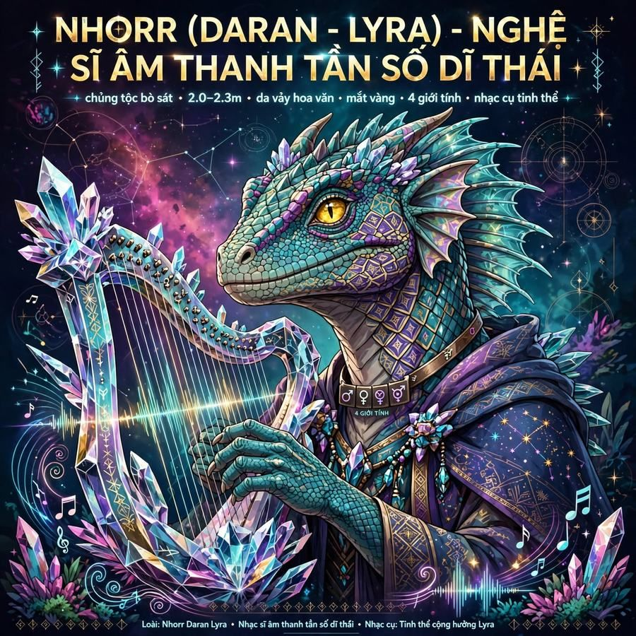
Adari (Hệ sao Vega / Olmeeka)
- Hình dáng & Chiều cao: Cao 2,0m – 2,2m; vóc dáng thanh mảnh, cổ dài. Làn da màu xanh lam nhạt (blue-skinned) do thích nghi sao cực xanh Vega; đầu hói; mắt pha lê trong suốt.
- Đặc điểm Sinh học & Giác quan: Khả năng chịu bức xạ cao. Hấp thụ dinh dưỡng lỏng khoáng chất. Tuổi thọ trên 1.000 năm.
- Đặc tính & Vai trò Thiên hà: Hòa bình; ghi nhận trong văn bản Vệ Đà Ấn Độ như các vị thần da xanh.
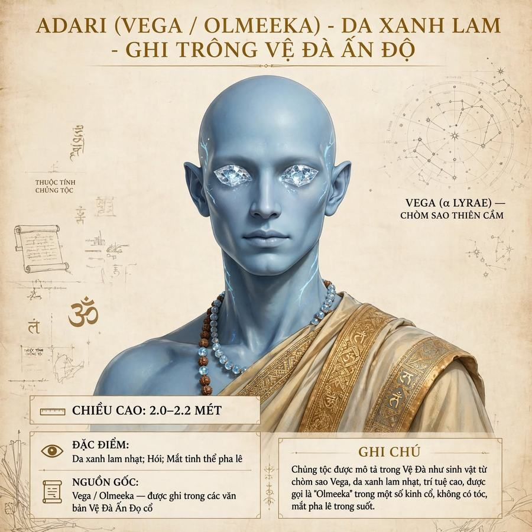
Ozman (Hành tinh Ozma — Hệ Vega)
- Hình dáng & Chiều cao: Cao 2,1m – 2,3m; gầy; da màu hồng xám nhạt. Đầu hói, hộp sọ phình nhẹ về phía sau; mắt nhạt màu, mũi dài hẹp.
- Đặc điểm Sinh học & Giác quan: Tồn tại ở mật độ dĩ thái cao, có khả năng điều biến từ trường môi trường.
- Đặc tính & Vai trò Thiên hà: Hòa bình; nghiên cứu khoa học từ trường.
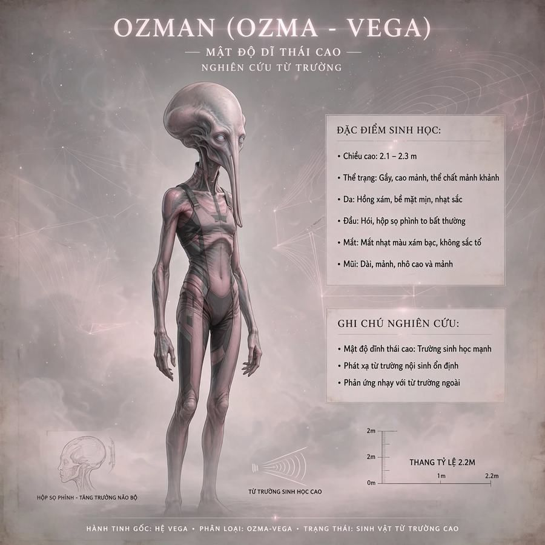
Afim Spiantsy (Hành tinh Crimea Ai-Petri — Gamma Lyrae)
- Hình dáng & Chiều cao: Cao 1,4m – 1,6m; da màu xanh lam bao phủ bởi các đốm xanh đậm (nam) hoặc đốm nhạt (nữ).
- Đặc điểm Sinh học & Giác quan: Không hít thở oxy (khí quyển gốc hydro). Có năng lực tự tàng hình. Tuổi thọ 300 năm.
- Đặc tính & Vai trò Thiên hà: Hòa bình nhưng cảnh giác. Tàu đĩa nhỏ, chuyên nghiên cứu sự tiến hóa loài người.
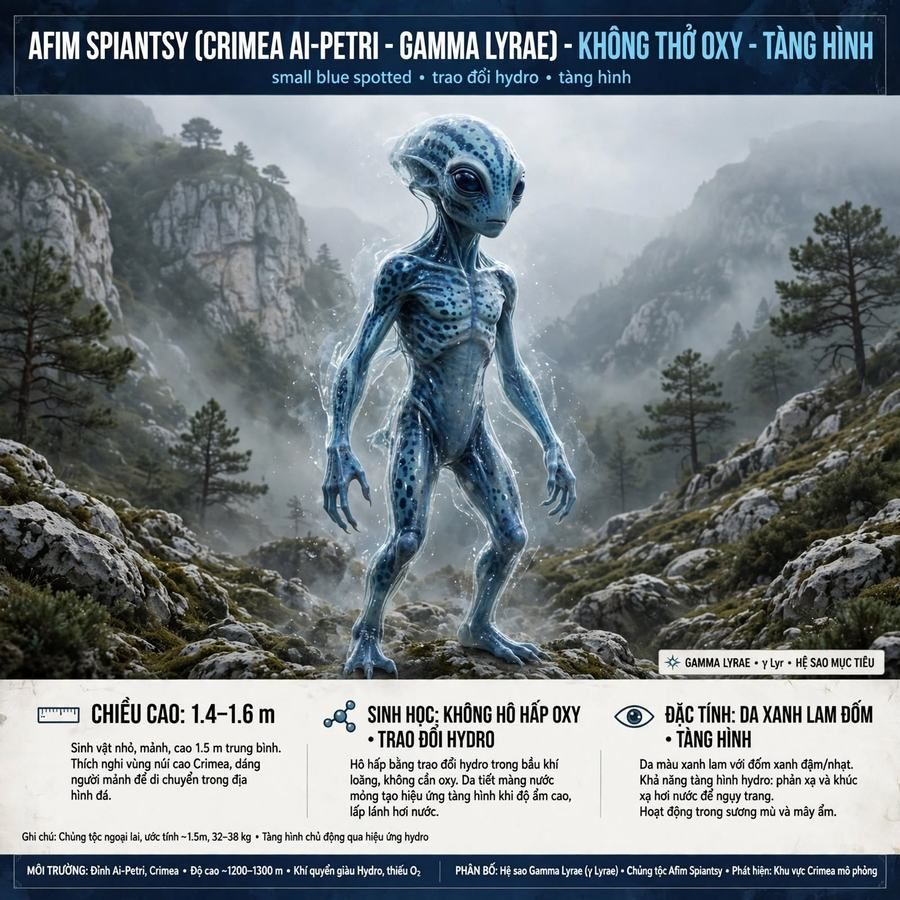